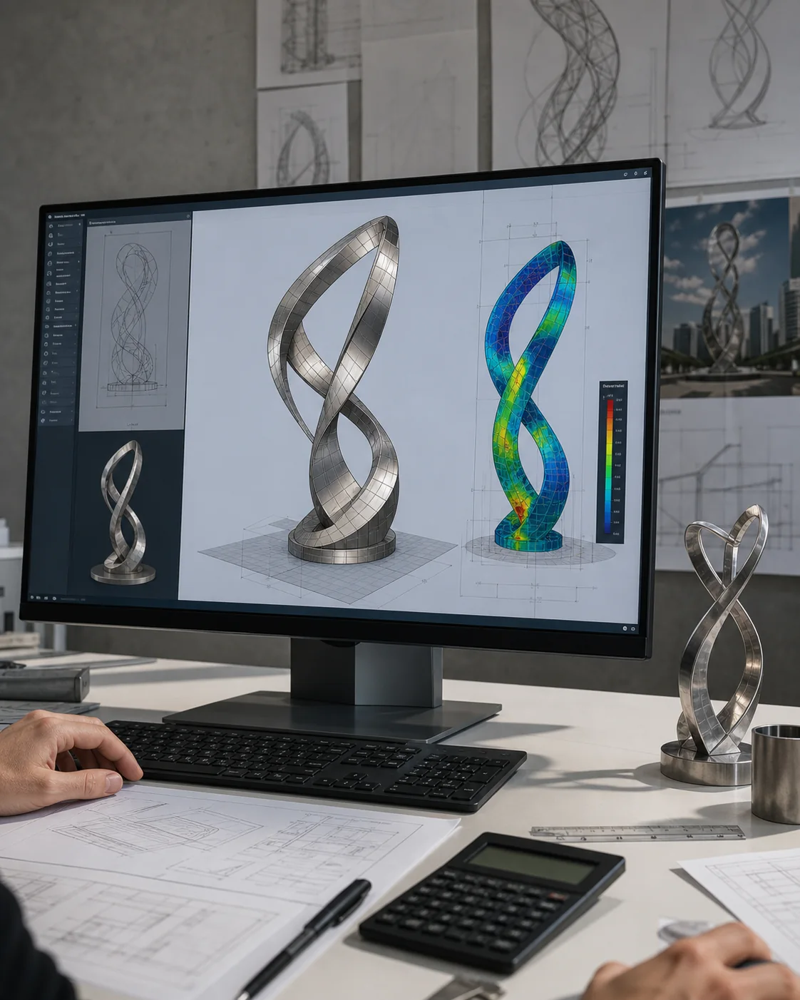

Where is WEIERYANG based?
WEIERYANG is a sculpture studio and manufacturer based in China. Our project scope can include custom design, structural development, fabrication, export packing and overseas installation guidance.
WEIERYANG is a sculpture studio and manufacturer based in China. We make custom sculptures from client drawings or develop original designs with designers, contractors, suppliers, developer procurement teams and private owners. These answers explain who we work with, how to prepare an inquiry and which design, export and installation responsibilities need to be agreed for an overseas commission.



WEIERYANG is a sculpture studio and manufacturer based in China. Our project scope can include custom design, structural development, fabrication, export packing and overseas installation guidance.
Yes. We work with designers, contractors, suppliers, developer procurement teams and private owners. Describe your role and project use so the review can address the decisions and information relevant to you.
Start with the project outline and explain any confidentiality requirements. Drawings can be reviewed privately, and an NDA can be discussed before detailed technical review. Agree the review arrangement before sharing restricted files.
State what is known, what is undecided and the site conditions. Photographs or plans, intended use, approximate scale, exposure and destination help identify the next decisions; final material and dimensions are confirmed through project review.
Price and programme depend on the approved design, scale, materials, fabrication complexity, reviews and delivery route. Send the project brief and required date for a scope review; a published reference image is not a fixed-price or ready-to-ship product.
WEIERYANG can provide overseas installation guidance. Confirm who supplies local engineering approvals, foundations, lifting equipment and the installation crew, together with any agreed on-site services, before ordering.
Send drawings, site photos, scale, material direction, destination country, and schedule to begin a serious review.